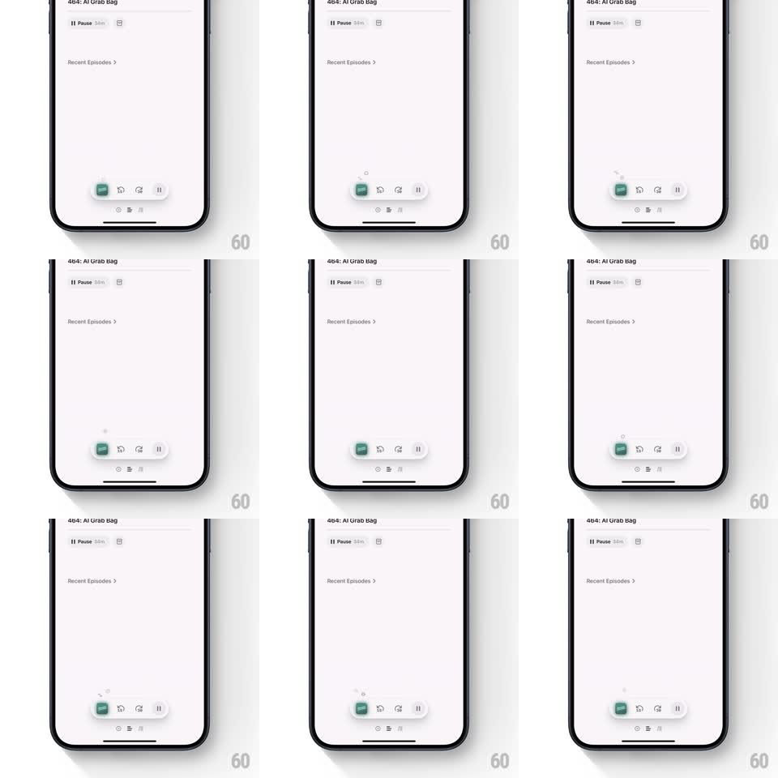

Media
Frame-by-frame

Rebuild this interaction 1:1: Queue's mini-player morph - on the light podcast episode page, tapping Play on the floating bottom pill makes it spring and expand into a mini-player bar (green episode thumb, skip, queue, pause), while a small queue icon floats up out of the button and fades away.

Rebuild this interaction 1:1: Queue's mini-player morph - on the light podcast episode page, tapping Play on the floating bottom pill makes it spring and expand into a mini-player bar (green episode thumb, skip, queue, pause), while a small queue icon floats up out of the button and fades away. ## Integration Integration: stack-agnostic spec - springs given as stiffness/damping, timed motions as duration + curve; map every value to your framework and animation library of choice. ## Scene A soft lavender-white podcast page: "464: AI Grab Bag" header with a Play/Pause toggle and duration, "Recent Episodes" link, and at the bottom a floating white pill (Play + duration) resting above the home indicator. The expanded state is a wider floating bar: green square artwork thumb, skip-back, queue icon, pause icon. ## Motion spec Pattern: pill-to-player morph with icon release. - Tap Play: the pill compresses (scale 0.92, 80ms) then springs wider (width expands to the full bar, spring ~380/20, ~400ms) - one continuous container morph, rounded corners animating with it. - Inside the morph: the "Play" label and duration fade out (150ms) as the green artwork thumb pops in at the left (scale 0.5 -> 1, spring, 250ms) and the control icons fade in staggered left to right (60ms apart). - On the queue action, a small queue icon releases from the button: it floats upward (translateY -40px, 600ms, ease-out), scaling down (1 -> 0.6) and fading out - a tiny confirmation puff. - The bar then holds a subtle float (translateY +/-2px, 3s loop) above the home indicator. - Pause: the bar contracts back to the pill on the same spring, icons reversing out. ## Calibration - The morph is driven by one spring - width, height, and corner radius stay in the same curve. - The released queue icon is decorative feedback - it never blocks input. ## Reduced motion Pill crossfades to the bar; no floating icon. ## Don't miss - The artwork thumb is a saturated green square - the one strong color on the pale page. - The floating bar casts a soft shadow that grows slightly as it expands.